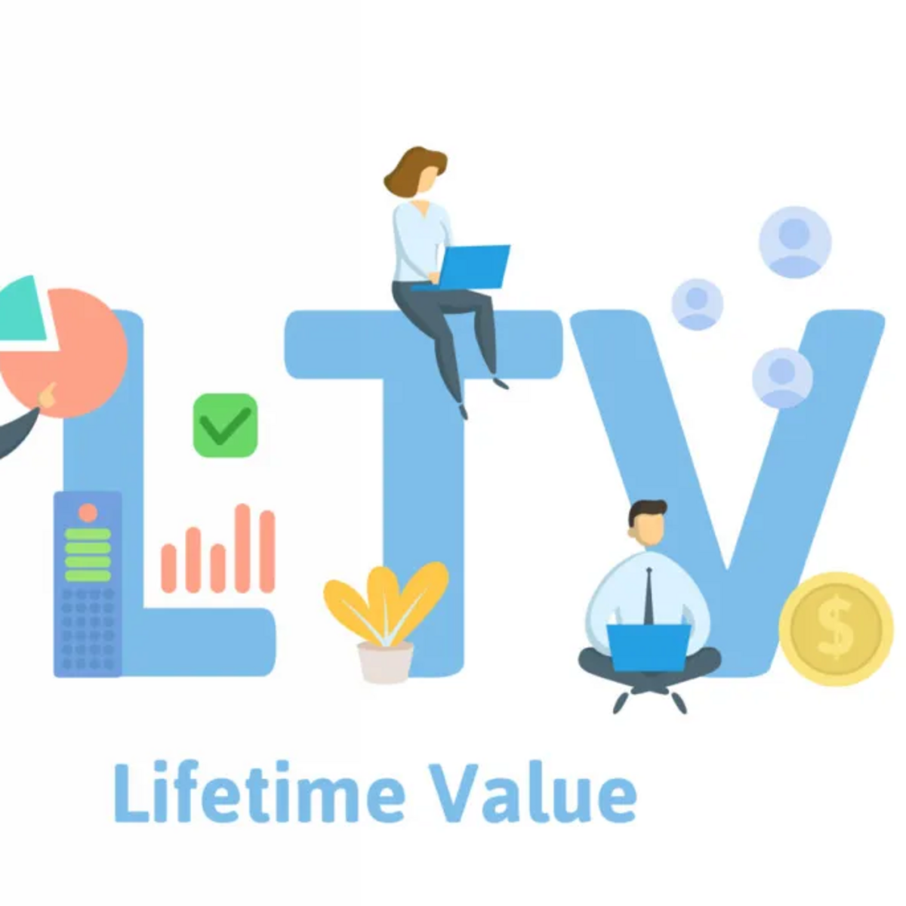

In this project collection, I demonstrate end-to-end analytical proficiency using Microsoft Excel and SQL Server, applying core to advanced techniques for data manipulation, querying, and business reporting.

This project demonstrates end-to-end analysis of global health data from Kaggle, including data cleaning and transformation in SQL Server and interactive visualization in Power BI to identify trends and support strategic health decisions.

This project focuses on web scraping and customer data cleaning using Python, where raw data was extracted from online sources, cleaned, and structured for analysis to enable accurate insights and reliable decision-making.

This project demonstrates sales data analysis in Excel using Adidas performance data, featuring data cleaning, trend analysis, and interactive reporting to support data-driven decisions.

This project showcases advanced LTV analysis in Power BI, using customer transaction data to identify high-value segments, retention trends, and long-term revenue opportunities.

In this project, I used MySQL to analyze customer churn data, uncovering the main drivers of customer attrition and providing insights to improve retention and engagement.
This project demonstrates end-to-end data preparation and analysis, where laptop dataset cleaning was performed in Python and exploratory data analysis was conducted in MySQL to extract actionable market insights.
This project leverages data analytics to explore the trends, causes, and regional patterns of malaria across Africa. By analyzing historical and demographic data, the study aims to uncover key drivers of malaria prevalence and evaluate the effectiveness of interventions. The insights generated support evidence-based strategies for reducing the disease burden and improving public health outcomes.
In this project, I developed a machine learning model to predict New York housing prices by analyzing historical property data. The workflow included data cleaning, feature engineering, model training, and performance evaluation to deliver reliable and actionable pricing predictions.
This project demonstrates end-to-end sales analysis of Olist Store’s 2018 dataset, including data modeling, DAX calculations, and interactive dashboard development in Power BI to drive strategic sales decisions.
In this project, I explored ride-hailing app usage in Pakistan by analyzing survey data in Power BI to identify key trends, user satisfaction levels, and platform preferences for data-driven insights.